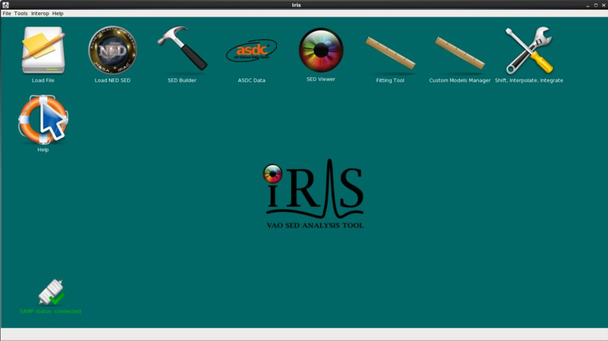
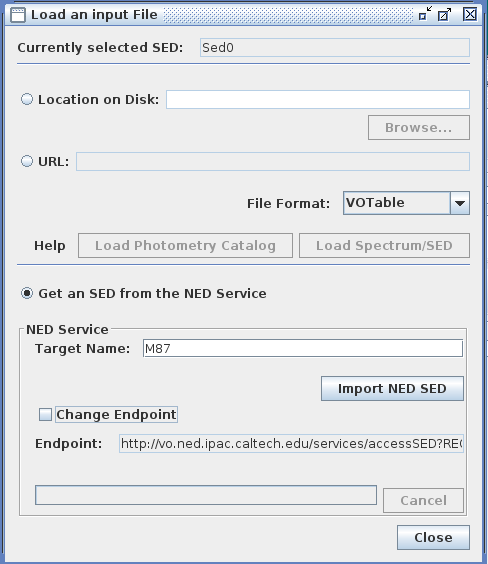
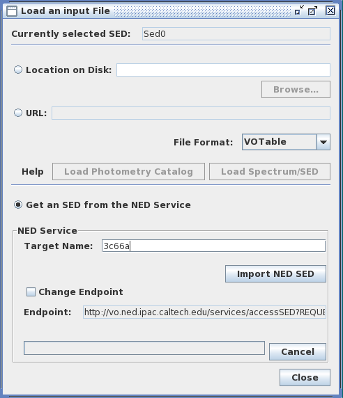
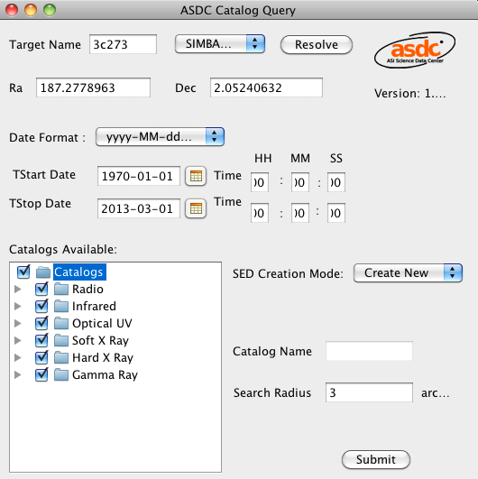
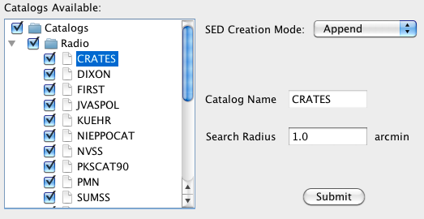

In order to visualize and analyze a wide-band SED of an astronomical object, multiple SED segments and/or photometric points from various observatories and file locations must be gathered and co-plotted; Iris features multiple entry points for SED data to facilitate this process. You can load data files from your local disk into Iris, import data directly from NED, or transmit data from a SAMP-enabled application.
It is expected that users will need to input SED data in various file formats in order to construct a multi-segment SED of a source. Consequently, the SED Builder tool within Iris is equipped to convert user SED data files in non-native formats into one of the two file formats natively supported by Iris, IVOA-compliant VOTable or FITS. Independent of how each data set is loaded and from where, Iris can simultaneously plot multiple SED segments together in the main display.
This thread demonstrates the various ways to read SED data into Iris to begin your data analysis session.
Last Update: 07 May 2015 - Updated for Iris 2.1 beta.
Files in any of the following formats may be input to Iris for analysis. However, as Iris natively supports only IVOA-compliant FITS and VOTable format, when a file is loaded in a non-native format, an extra step is required of the user in order to convert the data to a compatible format, using the SED Builder.
The SED Builder tool accepts as ‘non-standard’ any binary or text-based file that does not conform to the IVOA SED, Spectrum and Photometry Data Model; these include FITS and VOTable files which do not conform to the IVOA standards. To learn more about the SED Builder and how to use it to convert your SED data into a compatible format, refer to the Building a SED in Iris section of the [Iris How-to Guide][guide].
An Iris input file should contain a table of photometric data, where one or more of the columns lists measured source flux, flux density, or luminosity values, with optional, associated columns listing the errors on the flux values; and, if loading a spectral segment (as opposed to a photometric point(s)), an additional column listing the spectral coordinate values, either wavelength, frequency, or energy.
For a description of each supported file format listed here, see Supported Input File Formats.
Note: While the time coordinate associated with a photometric or spectroscopic measurement is a fundamental piece of information, the explicit dependence on time is ignored in the context of SED analysis in Iris. (The time t of the observation is always contained in the metadata accompanying every measurement supported by Iris.)
| [Back to top] |
After downloading and installing Iris according to the procedure outlined in the Download & Installation page, the GUI may be started from the Unix command line as follows:
$ /bin/bash # for C-shell users ONLY $ source activate iris $ iris

You can also start the application by opening a folder manager window on Linux or the Finder on Mac, navigating to the Iris 2.1 directory, and double-clicking on the “Iris” executable.
This opens the desktop interface with icons that launch the various tools used by the application, as well as a link to this on-line help documentation.
All of the windows launched by Iris will be confined within this desktop. Each window can be iconified and its icon will stay in the Iris desktop itself, so that it will not take up space in your applications bar.
The Iris desktop takes on the same look and feel as your native desktop, and the behaviour is consistent with your native environment. For example, on Mac OS X, iconified windows appear as miniatures at the bottom-center of the desktop, while on Linux, they could be draggable buttons placed on the bottom-left of the desktop.
The SED Builder desktop can itself be resized, maximized and iconified in your native desktop.
| [Back to top] |
You are provided with three options for loading data: from a local file or remote URL file location, searching NED for SED data associated with the entered target name, and from SAMP-enabled applications.
A SED data file stored on your local disk or at a URL address may be uploaded into the Iris main display simply by starting the application and selecting the Load File icon on the Iris desktop.

After browsing for and selecting your SED data file on disk, or entering the URL address where the file is located, simply select the appropriate file format from the drop-down menu, and then either “Load Spectrum/SED” or “Load Photometry Catalog.” The former option is appropriate for a data file consisting of one or more segments of data, and the latter, for a file consisting of a photometric point(s). If a segment is loaded and it is already in one of the formats natively supported by Iris, it will automatically be displayed in the Iris Visualizer; otherwise, you will have to complete an extra step of entering configuration information in order to convert it for upload into the display. Likewise, if a photometry catalog is loaded, you will have to enter several pieces of information in order to ‘tell’ Iris how to display the points. The “Building a SED in Iris” section of the [Iris How-to Guide][guide] demonstrates the use of these two loading options.
IVOA-compliant SED files are available from SED services such as the NASA/IPAC Extragalactic Database (NED), which you can upload into the application (recall the option to directly import SEDs into Iris from NED, in particular). The Iris package includes sample SED files in the “examples” subdirectory of the installation directory, which were downloaded from NED by searching its photometry data archives for SEDs of the following objects: 3C 273, 3C 295, 3C 66A, M31, M87, NGC 1068, and NGC 4151.
The sample files in the “examples” directory are shown below:
$ ls <basedir>/miniconda/envs/iris/opt/iris/examples/ 3c273.xml 3c295.xml 3c66a.xml m31.xml m87.xml ngc1068.xml ngc4151.xml
| [Back to top] |
As an alternative to loading data from file, SED data from NED may be directly imported into Iris via the “Get an SED from the NED Service” option in the Load File window.

The entered target name will be resolved by NED, and any associated SED data found in the NED photometry archive will be returned by the web service and loaded into the tool. (The “Change Endpoint” input can be used to change the NED service URL which is queried; however, this not usually needed.)
After entering the name of the desired target and selecting “Import NED SED”, if the search was successful the SED data for the source will appear automatically in the Iris Visualizer, and an entry for the imported SED will be added to the SED Builder window.
This example query returns a collection of photometric data points obtained by various astronomical observatories, all contributed to the NED photometry data archive in association with blazar 3C66A. The metadata associated with one or multiple selected data points may be viewed with the “Metadata” button in the Iris main display, as demonstrated in the “Visualizing SED Data” section of the [Iris How-to Guide][guide].
| [Back to top] |
In the lower-left corner of the Iris desktop there is an icon that shows the status of the Simple Application Messaging Protocol (SAMP) connection, which the tool uses to communicate with other interoperable applications.
SAMP is a Virtual Observatory protocol that allows desktop applications to communicate with each other. If you use other SAMP-enabled Virtual Observatory applications that manipulate tables of astronomical data, such as Topcat or Aladin, you can transmit tables of data from these external applications to Iris.
To transmit data to Iris from another SAMP-enabled desktop application, simply broadcast the table from the external application. If in the SED Builder window of Iris there are no open SEDs, a new SED will be created.
Note that the “Broadcast SED” button in the SED Builder window can be used to transmit a SED from Iris to another SAMP-enabled application.
| [Back to top] |
The ASDC IRIS Plugin is a software interface developed at the ASI Science Data Center (ASDC) as part of an on-going collaboration between the ASDC and the IRIS developers at CfA. It works as an interface to retrieve spectral data from the ASDC SED server and use it within the IRIS tool.
If an icon named “ASDC Data” is already present in the IRIS main window, this means that the plugin is already pre-installed and properly configured on your IRIS version. If this is the case, you may skip the following instructions and go directly to the “Usage” section.
If the icon marked with the red arrow in fig. 1 is not present, the corresponding plugin can be found in the IRIS directory:
<basedir>/miniconda/envs/iris/opt/iris/lib/AsdcIrisPlugin-1.1.3.jar
To install it, just go to “Plugin Manager” under the “Tools” menu bar, copy the above path to the “Plugin Directory” and “Load” the plugin. A new icon named “ASDC Data” will appear in the IRIS main window.
To launch the plugin, click on the “ASDC Data” icon in the IRIS main window. A new window, named “ASDC Catalog query” will appear. This is the main interface to query the ASDC catalogs server, load ASDC multi-frequency data on IRIS and display it as spectral energy distributions (SEDs).

The name of the cosmic source for which SED data is required can be entered in the “Target Name” box. The system will automatically retrieve the corresponding equatorial coordinates using the NED or the Simbad name server. Alternatively, if the source’s coordinates are known, these can be directly inserted in the “Ra” and “Dec” boxes, in decimal degrees.
Data can be queried according to observation time, by selecting the start and end date of observation (Tstart Date/Time and TStop Date/Time boxes). Time intervals can be specified in the common year-month-day-hour-minute-second format (yyyy-MM-dd hh:mm:ss), or as Modified Julian Day (MJD), using the “Date Format” box.
Many different catalogs can be queried. They are grouped in the “Catalogs Available” box according to their wavelength domain. Each domain (Radio, Infrared, Optical UV, Soft X Ray, Hard X Ray and Gamma Ray) includes several catalogs, which can be viewed by clicking on the arrow to the left of each entry. The full catalog list is reported in Appendix A1. To select or deselect a catalog, just check or uncheck the corresponding box.
Each catalog has a default search radius, which depends on the precision of the coordinates listed in the chosen catalog. Be aware that search radii can vary substantially depending on catalog type. For example, optical catalogs typically have radii of a few arc-seconds, while gamma-ray catalogs can have search radii that can be as large as one degree.

The “Search Radius” box allows users to vary the circular region within which data belonging to each catalog are searched. To do this, just select a catalog from the “Catalogs Available” box. The name of the selected catalog will appear in the “Catalog Name” box, and the default error radius in the “Search Radius” one (see fig. 3 for an example). A new search radius in arc-minutes for the selected catalog can now be defined editing the “Search Radius” box. The search radius is centered on the input coordinates.
The complete list of the catalogs accessible via the ASDC IRIS Plugin as of June 2013, is reported below in the table. This list may of course change in time as more catalogs are published in the ASDC webpages. The first column indicates the catalog name, the second one the group to which the catalog belongs, and the last one the frequency domain of the catalog entries. Infrared, Optical and UV fluxes have been corrected for the Galactic AV, following the extinction recipes in Cardelli et al. (1989, ApJ, 345, 245) and Fitzpatrick (1999, PASP, 111, 63). The Soft X-ray fluxes have been corrected for the Galactic NH, modeling the corresponding X-ray spectrum with an absorbed power law. More information about the ASDC catalogs can be found on the ASDC webpages
|
|
|
| [Back to top] |
| Date | Changes |
|---|---|
| 08 Aug 2011 | updated for Iris Beta 2.5 |
| 25 Sep 2011 | updated for Iris 1.0 |
| 25 May 2012 | updated for Iris 1.1 |
| 02 Jan 2013 | updated for Iris 1.2 |
| 21 Jun 2013 | updated for Iris 2.0. Added ASDC plugin documentation |
| 05 Aug 2013 | updated figures for Iris 2.0. Integrated ASDC documentation to the website. |
| 02 Dec 2013 | Updated for Iris 2.0.1 |
| 07 May 2015 | Updated for Iris 2.1 beta. |
| [Back to top] |
{kind=link}
{kind=link}